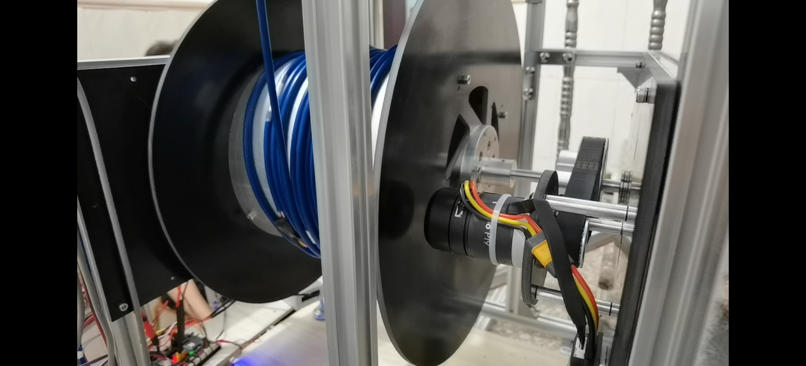
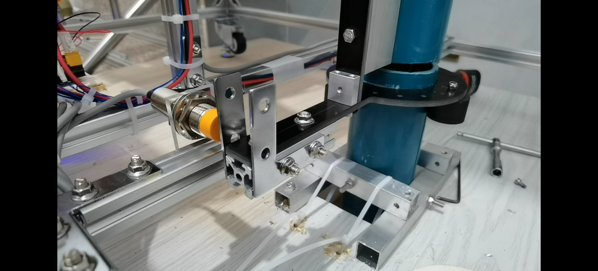
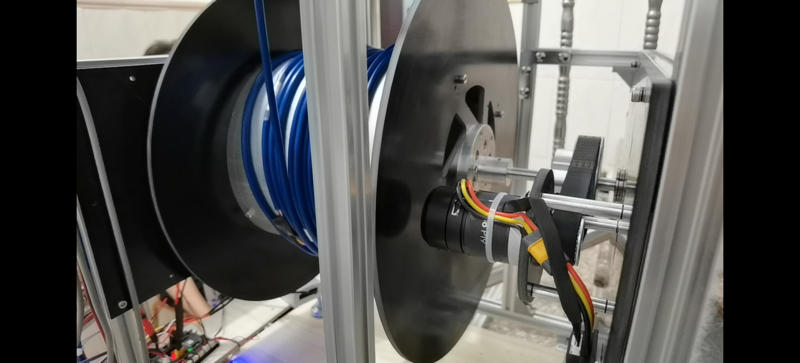
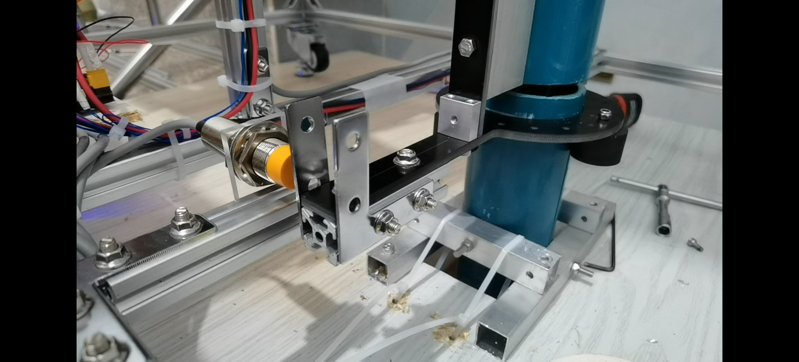

This is the 2020-2021 Year 3 second semester project of ISD. This project worked with Hong Kong International Airport (HKIA). The project vision a fully autonomous trolley hauling system (Trocomotor), since during interviews and shadowing, short of trolley hauling workers was observed. But due to short of time and manpower, only part of the proposed system is built which can also improved the status of current working process. Current trolley hauling work is done by workers using hauling scooters. But the scooters has limited power and limited space therefore can only handle around 20 trolleys at a time. Trocomotor follower can follow the track of the workers' scooters by tacking the Apriltag sticked behind the scooter or the trolley. This allow workers to manipulate more trolleys at the same time by forming several trolley trains solving the power and space issue at the same time.

 



Empathize
Our team did a site visit to HKIA and several interviews with their staff and workers. The airport staff express their concern to shortage of trolley hauling workers and financial burden. Less people want to work at the airport since it is far away from residential areas and airport need to pay more and more to attract workers. But taking the project manpower and time as consideration, we also want our system to replace the workers gradually which means our first step need to be working with them, so that we can start our project by doing part of the system.
Problem Statement
How might we design equipment for the trolley hauling worker that can improve their working efficiency.
Solutions
The far vision of the Trocomotor system include:
- Trocomotor Follower
- Trocomotor Leader
- Trocomotor Localizer
- Trocomotor Auto Trolley
- Trocomoter AI system
Lead 10-20 trolleys at the same time, but can only follow AprilTags
Small flexible robot that leads the Followers
Manipulate single trolleys and put them behind the Followers
Fully autonomous trolley that can move itself
AI system that monitor the usage feature of trolleys and deploy trolleys
This project focus on Trocomoter Follower. The Follower is a high power four wheel robot chassis with miniPC, high resolution camera and obstacle detection system (radar/ultrasonic sensors). The robot can haul up to 20 trolleys at the same time and by using the camera, it can follow the track of an AprilTag. The workers can put the AprilTag on their scooters or at the back of another train of trolleys.
My responsibility
- Mechanical design and manufacture
- Obstacle Detecting system
Using SolidWorks and available materials in the market
Embedded system and electronics
Links
Project Final ReportVideos
Here is the demo video of Trocomotor Follower.